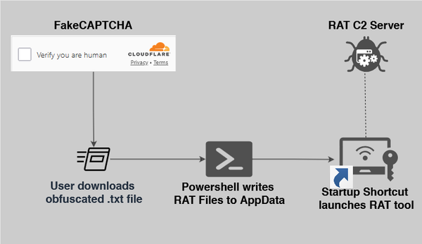

Systems, Software and Security
Systems, Software and Security
Home
Author
More
Recent articles
Attack Chain Investigation: FakeCAPTCHA to RAT Install
35 minutes ago
Setting up a blog using Ghost and GitHub Pages
5 years ago
Tags
systems
Toggle light/dark mode
Sign up
Systems, Software and Security
Thoughts, stories and ideas.

Attack Chain Investigation: FakeCAPTCHA to RAT Install
35 minutes ago
•
7 min read
systems
Setting up a blog using Ghost and GitHub Pages
5 years ago
•
3 min read
Page 1 of 1
Type to search
No results for your search, please try with something else.